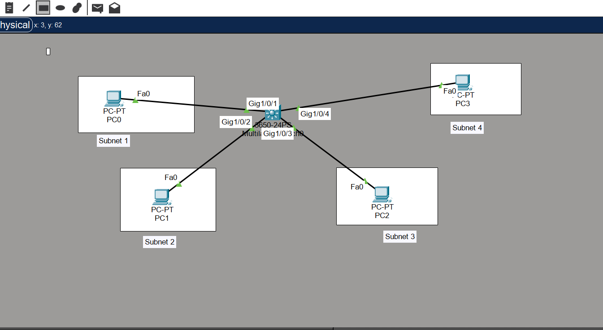
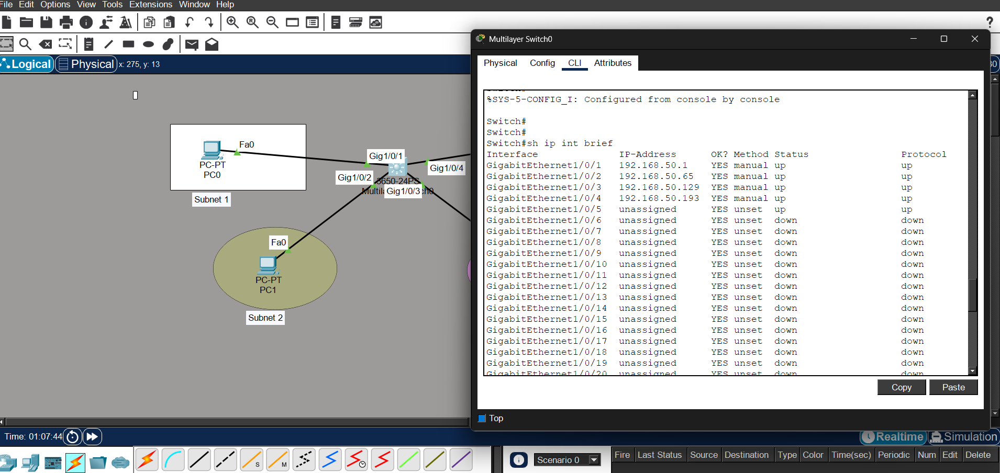
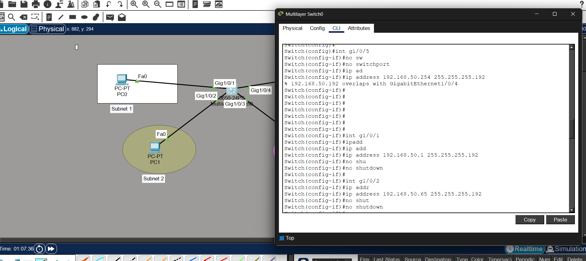
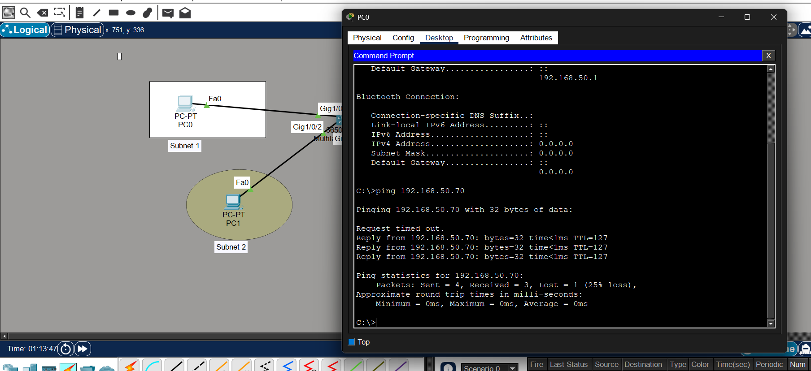

IP subnetting is the process of dividing a larger network into smaller sub-networks to improve efficiency and organization.
A network 192.168.10.0/24 divided into 4 subnets using /26:
- 192.168.10.0 – 63
- 192.168.10.64 – 127
- 192.168.10.128 – 191
- 192.168.10.192 – 255
Basic network topology created to test subnet communication using a multilayer switch.

Devices were assigned IP addresses based on their respective subnets along with correct default gateways.

Switch ports were converted to Layer 3 and assigned IP addresses to act as gateways for each subnet.

Successful communication between devices in different subnets was verified using ping.

- Subnet mask and CIDR notation
- Network and broadcast address
- Default gateway concept
- Layer 2 vs Layer 3 switching
- Inter-subnet communication